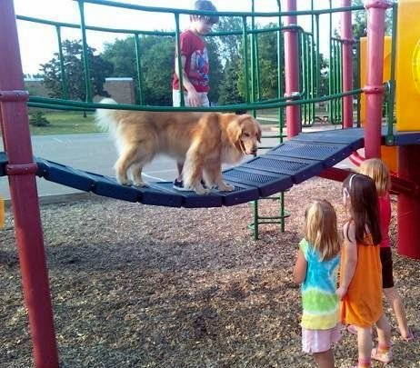
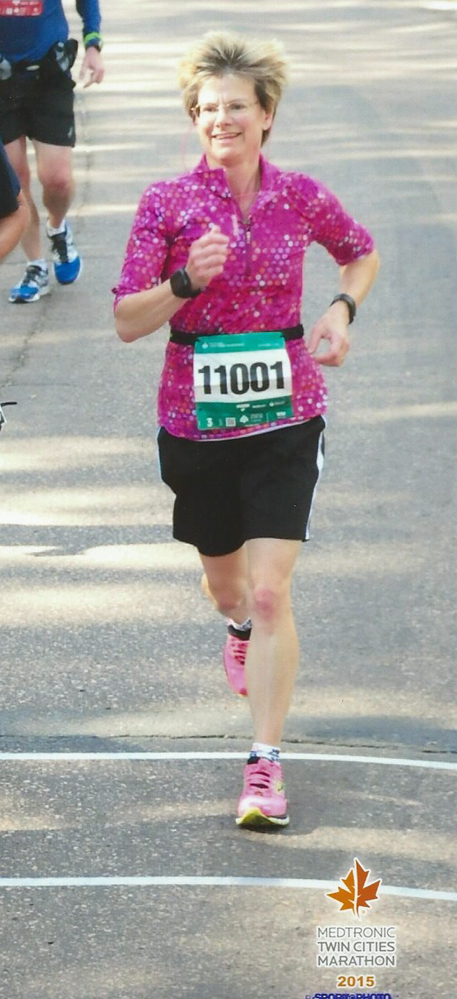
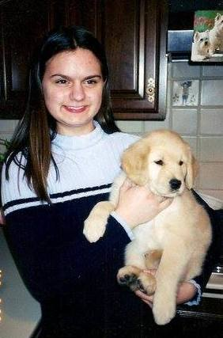
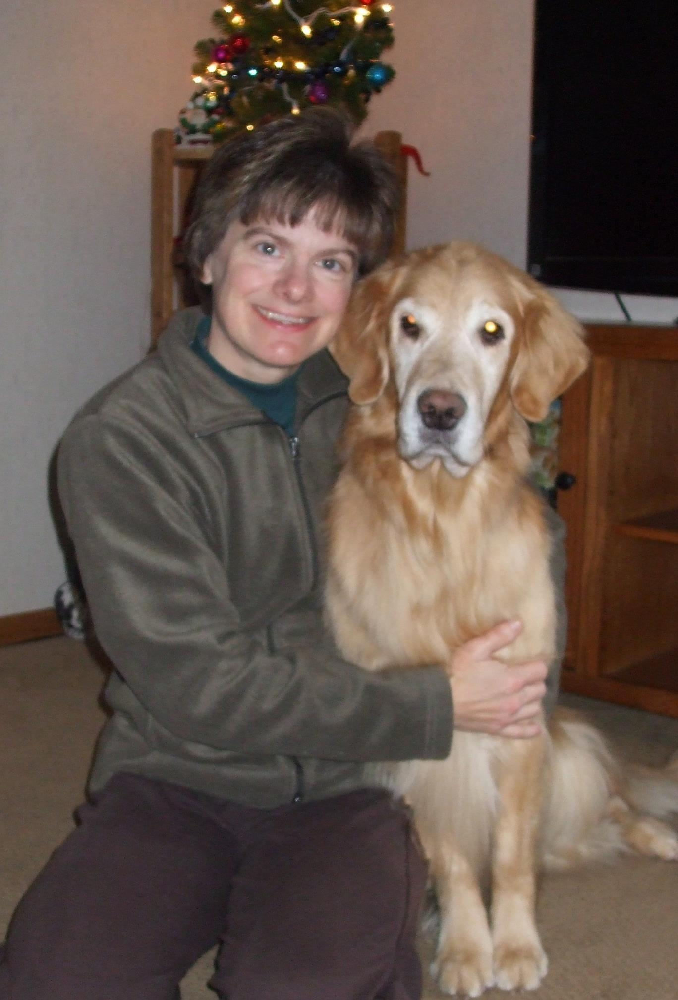

Laurie Hanson has loved and owned dogs her entire life. She has shown dogs all over the US and Canada.
 Laurie wanted to capture the joy and happiness that Treasure brought to her family. A book was the perfect medium; and having Treasure be the focus of the story allows the enthusiasm that Treasure felt every day to come through. You can tell that Treasure wasn't just a dog; she was a teammate; a great friend and a joy to live with.
 She and her Siberian Huskies and Golden
Retrievers have participated in obedience, agility, lure
coursing, therapy dog work, sled dog racing,
conformation showing, and tracking events.
She and her Siberian Huskies and Golden
Retrievers have participated in obedience, agility, lure
coursing, therapy dog work, sled dog racing,
conformation showing, and tracking events.
 Laurie has been active in various All Breed Kennel Clubs and Breed Clubs, having served in various leadership roles over the years. She has been active in 4-H, training young dog owners in
Rally, Agility and Obedience. She's also been a judge both at the local county level and at the state level.
Laurie has been active in various All Breed Kennel Clubs and Breed Clubs, having served in various leadership roles over the years. She has been active in 4-H, training young dog owners in
Rally, Agility and Obedience. She's also been a judge both at the local county level and at the state level.
 In her free time she enjoys reading and running. She recently qualified for the Boston Marathon.
 Laurie and her husband live in Ramsey, Minnesota. They have two children. Treasure was especially loved by their daughter.
She currently has three Golden Retrievers who are all related to Treasure.
 Treasure was born on her birthday!!!